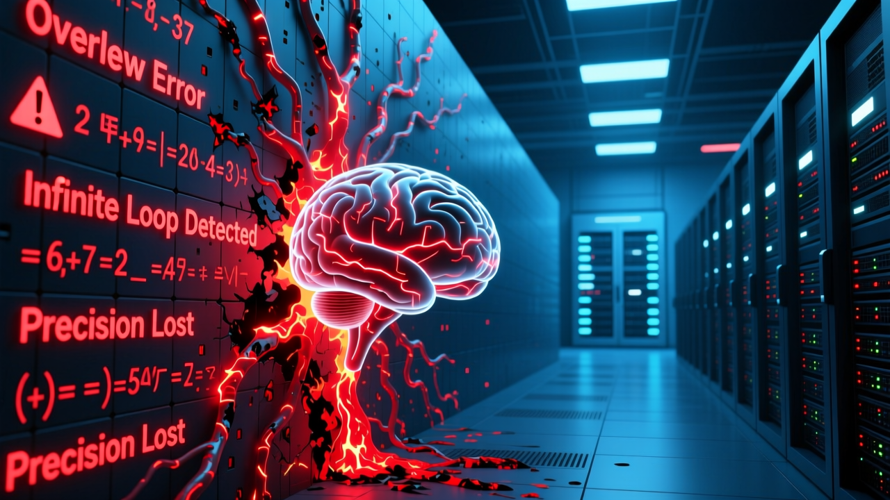

數學上行不通：非確定性、幻覺、功能極限三大無法突破的牆

深度分析反駁 Anthropic CEO 的「數據中心天才國」預測。AI 在數學上存在根本限制——非確定性（Non-determinism）使其無法作為可靠的自主代理。這些限制不是技術問題，而是 Transformers 架構的數學本質。
即使在 temperature zero 時，同一 prompt 也會產生不同輸出。這是 GPU 浮點並行計算的結果。在工程學中，在相同條件下表現不可預測的組件被稱為「故障」。
形式化證明：LLM 無法學習所有可計算函數，當用作通用問題解決器時會產生幻覺。最佳模型在基準測試上的幻覺率超過 15%。
Transformers 在可靠的功能組合方面存在問題，無法推理基礎設施約束——什麼是可能的，什麼不是，邊界在哪裡。
非確定性系統不能被信任為可靠的自主代理。這是最基本的安全要求。所有其他都是評論。
| 牆 | 問題 |
|---|---|
| 數據牆 | 高質量訓練文本是有限的 |
| 計算牆 | 延遲約束、能源消耗超過整個國家、新數據中心連接需 2-4 年 |
| 架構牆 | 數學限制不會隨更多參數而消失 |
說「我們的技術在架構上不可靠」會影響估值——這是 IPO 後從不討論的事實。
部署了超過萬億美元，不能在赌上基金後質疑論點。否認意味著承認錯誤。
「AI 將取代每個人」獲得點擊，「AI 有數學限制」不會。二分鐘的娛樂價值超過深度分析。
AI 節省合格專家 20-40% 的時間。不是替代，而是對現有專業知識的放大。
— 實用建議理解你的領域和 AI 的真實能力——不是 CEO 文章中的理論能力，而是通過日常使用工具發現的真實能力。
AI 無法權衡取捨、無法導航組織政治、無法根據團隊能力和時間表在兩個方法之間選擇。SQL vs. NoSQL、Monolith vs. microservices——這些需要判斷力。
深度領域知識是你的護城河。不是表面熟悉，而是那種在你能解釋為什麼之前就能聞到錯誤答案的專家。
每個完全交給 AI 的任務都是你停止發展的技能。每個讓模型做的決定都是你停止運用的判斷力。
「數據中心天才國」不存在。存在的是一個強大的工具，需要熟練的人類才能安全操作。不要讓 20,000 字的文章說服你方向盤不重要——只是因為目的地聽起來令人興奮。